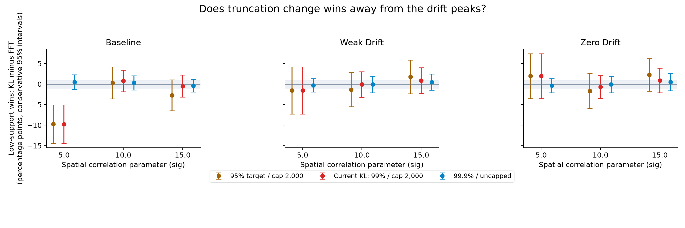
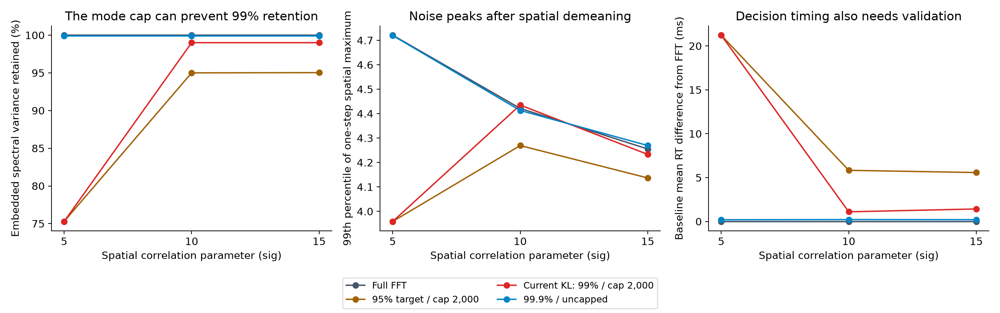
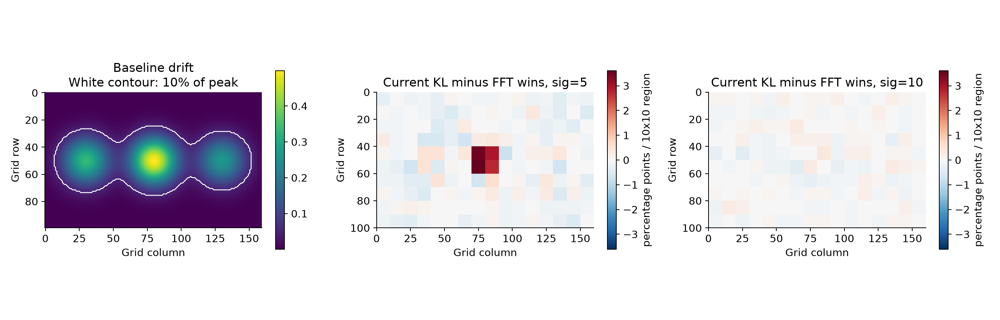

Empirical FFT comparison for discussion with Dr. Ratcliff · 25 October 2026
The concern is supported as a fidelity issue, but the observed direction differs from “extra spurious wins.” At sig=5, current KL reduces low-support wins from 23.05% to 13.28%. Restoring 7,399 modes to reach 99.9% variance retention reduces the baseline RT difference to +0.20 ms and the low-support-win difference to +0.49 percentage points. This is evidence of convergence toward FFT, not proof of equivalence.
1,024 paired trials per setting; 3 correlation values (5, 10, 15), 3 drift conditions (original strengths, one-quarter strengths, zero drift), and 4 noise methods. Every simulation uses the original 100 × 160 grid, 400-step horizon, drift shape, spatial demeaning, threshold variation and nondecision-time variation. No fitting is performed: all parameters are held fixed.
Primary endpoint: the fraction of all trials that cross the threshold and win at a location whose baseline drift is at most 10% of its peak. This region covers 65.1% of the grid. It is fixed across conditions; in the zero-drift control it means the same geographic region, since all locations then have zero drift. No-crossing trials are excluded from the win numerator and reported separately in the CSV. These are “low-support wins,” not automatically errors or spurious psychological responses.

Bars are conservative 95% paired intervals. The gray ±1 percentage-point band is an illustrative precision target, not a scientifically approved equivalence margin. Intervals overlapping zero do not establish equivalence.
| sig | Drift | Variance retained | FFT low-support wins | KL low-support wins | Difference, pp [95% CI] | Mean RT difference, ms [95% CI] |
|---|---|---|---|---|---|---|
| 5 | baseline | 75.29% | 23.05% | 13.28% | -9.77 [-14.40, -5.05] | +21.23 [+20.25, +22.22] |
| 5 | weak_drift | 75.29% | 57.81% | 56.25% | -1.56 [-7.27, +4.16] | +28.95 [+27.74, +30.15] |
| 5 | zero_drift | 75.29% | 66.60% | 68.55% | +1.95 [-3.52, +7.41] | +29.71 [+28.47, +30.98] |
| 10 | baseline | 99.00% | 28.52% | 29.30% | +0.78 [-1.83, +3.39] | +1.10 [+0.61, +1.61] |
| 10 | weak_drift | 99.00% | 61.52% | 61.43% | -0.10 [-3.23, +3.04] | +2.28 [+1.61, +2.94] |
| 10 | zero_drift | 99.00% | 69.73% | 69.04% | -0.68 [-3.45, +2.09] | +2.59 [+1.98, +3.20] |
| 15 | baseline | 99.00% | 29.88% | 29.39% | -0.49 [-3.15, +2.18] | +1.43 [+0.88, +1.97] |
| 15 | weak_drift | 99.00% | 57.42% | 58.30% | +0.88 [-2.26, +4.01] | +1.50 [+0.83, +2.20] |
| 15 | zero_drift | 99.00% | 65.92% | 66.80% | +0.88 [-2.11, +3.86] | +1.73 [+1.01, +2.49] |


The study samples retained Fourier modes with an FFT to cheaply evaluate the same Gaussian law as the production KL matrix multiplication. This is a test of statistical truncation fidelity, not a GEMM speed benchmark. Production-basis versus masked-FFT fields agree within 1.1e-05 maximum absolute error in the cross-checks at all three sig values. The diagnostic decision observer reproduces both production chunk implementations' RTs and categories on fixed-key checks.
All methods share underlying spectral normal draws and threshold/nondecision uniforms within each trial. Only the real FFT output is used, independently at every step. This avoids temporal correlations if a cutoff splits a tied frequency pair. Different sig settings use different keys. Category-switch percentages in the CSV describe this coupling, not independent-observation error rates.
Binary difference intervals use Bonferroni-combined 97.5% Clopper–Pearson intervals for the two discordance probabilities, giving at least 95% coverage per comparison, including zero discordances. Mean-RT intervals use 2,000 paired IID bootstrap samples. Intervals are not corrected across the experiment grid. Noise-tail estimates use one independent field per trial and are descriptive. The CSV includes 5%, 10% and 20% drift-cutoff sensitivity, RT quantiles, category shifts and no-crossing rates. Reported RTs retain the production convention for non-crossers (horizon plus nondecision time); inspect censoring alongside RT.
This is a finite Monte Carlo screen on one parameter family, not validation across the full fitting domain, participant datasets, or rare events below its sampling precision. Fitting could compensate for simulator bias; parameter recovery and fits to empirical data require separate tests. Agree on acceptable response-probability and RT margins before a confirmatory run, then use independent seeds and enough trials to resolve those margins.
Practical recommendation: require an explicit achieved-variance check before accepting KL output; choose a sufficient mode cap or fall back to FFT. Do not claim that the nominal 99% setting alone preserves decisions. No production behavior was changed by this study.
Hardware: cuda:0 NVIDIA GeForce RTX 4060 Laptop GPU; Python 3.12.3; JAX 0.10.2; NumPy 2.5.4. Seed 20261025, chunk 1. Runtime 4.0 minutes. Source hashes and full parameters: metadata.json. Trial data: trials.npz. Metrics: metrics.csv.